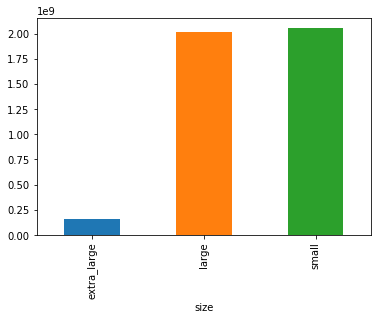
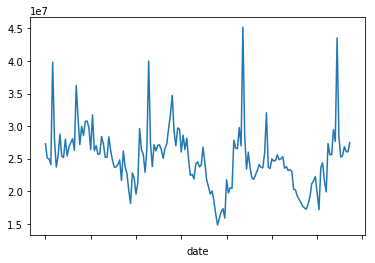
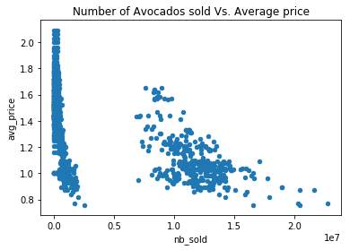
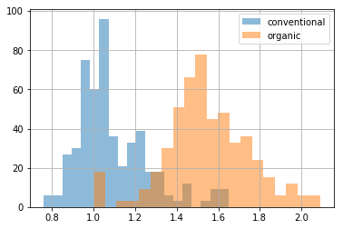
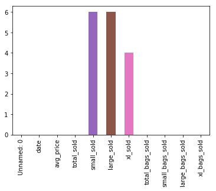
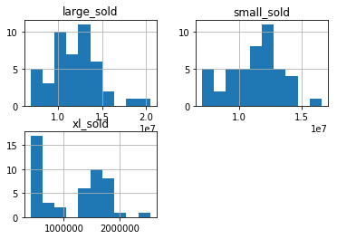

import pandas as pd
import matplotlib.pyplot as plt
%matplotlib inlineavocados = pd.read_csv('../dataset/avocado.csv', index_col=0)
avocados.head()| date | type | year | avg_price | size | nb_sold | |
|---|---|---|---|---|---|---|
| 0 | 2015-12-27 | conventional | 2015 | 0.95 | small | 9626901.09 |
| 1 | 2015-12-20 | conventional | 2015 | 0.98 | small | 8710021.76 |
| 2 | 2015-12-13 | conventional | 2015 | 0.93 | small | 9855053.66 |
| 3 | 2015-12-06 | conventional | 2015 | 0.89 | small | 9405464.36 |
| 4 | 2015-11-29 | conventional | 2015 | 0.99 | small | 8094803.56 |
avocados.tail()| date | type | year | avg_price | size | nb_sold | |
|---|---|---|---|---|---|---|
| 1009 | 2018-02-04 | organic | 2018 | 1.53 | extra_large | 1703.52 |
| 1010 | 2018-01-28 | organic | 2018 | 1.61 | extra_large | 1270.61 |
| 1011 | 2018-01-21 | organic | 2018 | 1.63 | extra_large | 1490.02 |
| 1012 | 2018-01-14 | organic | 2018 | 1.59 | extra_large | 1580.01 |
| 1013 | 2018-01-07 | organic | 2018 | 1.51 | extra_large | 1289.07 |
Total number sold for each avocado size group
nb_sold_by_size = avocados.groupby('size')['nb_sold'].sum()
nb_sold_by_size.plot(kind='bar', x='size', y='nb_sold')
plt.show()
Bedazzling bar plot! It looks like small avocados were the most-purchased size, but large avocados were a close second.
Changes in sales over time
visualizing the change in avocado sales over three years.
Line plots are designed to visualize the relationship between two numeric variables, where each data values is connected to the next one. They are especially useful for visualizing change in a number over time, since each time point is naturally connected to the next time point. ### the total number of avocados sold on each date
nb_sold_by_date = avocados.groupby('date')['nb_sold'].sum()
nb_sold_by_date.head()date
2015-01-04 27279606.03
2015-01-11 25081927.33
2015-01-18 24961540.48
2015-01-25 24094678.66
2015-02-01 39838734.08
Name: nb_sold, dtype: float64nb_sold_by_date.plot(kind='line', x='date', y='nb_sold')
plt.show()
Here, it looks like the number of avocados spikes around the same time each year.
Avocado supply and demand
comparing the number of avocados sold to average price and see if they’re at all related. If they’re related, one number may be used to predict the other.
avocados.plot(kind='scatter', x='nb_sold', y='avg_price', title='Number of Avocados sold Vs. Average price')
plt.show()
It looks like when more avocados are sold, prices go down. However, this doesn’t mean that fewer sales causes higher prices - we can only tell that they’re correlated with each other.
Price of conventional vs. organic avocados
avocados[avocados['type']=='conventional']['avg_price'].hist(bins=20, alpha=0.5)
avocados[avocados['type']=='organic']['avg_price'].hist(bins=20, alpha=0.5)
plt.legend(['conventional', 'organic'])
plt.title='Price of Conventional vs. organic avocados'
plt.show()
We can see that on average, organic avocados are more expensive than conventional ones, but their price distributions have some overlap.
Missing Values
avocados_2016 = pd.read_csv('../dataset/avocados_2016.csv')
avocados_2016.head()| Unnamed: 0 | date | avg_price | total_sold | small_sold | large_sold | xl_sold | total_bags_sold | small_bags_sold | large_bags_sold | xl_bags_sold | |
|---|---|---|---|---|---|---|---|---|---|---|---|
| 0 | 0 | 2016-12-25 | 1.00 | 30287853.70 | 9255125.20 | 10282925.61 | 541972.42 | 10207830.47 | 7709584.33 | 2417144.92 | 81101.22 |
| 1 | 1 | 2016-12-18 | 0.96 | 29583882.61 | 9394065.91 | 10339168.20 | 427872.42 | 9422776.08 | 6970320.34 | 2358443.96 | 94011.78 |
| 2 | 2 | 2016-12-11 | 0.98 | 30093540.70 | 9009996.11 | NaN | 403047.93 | 10713276.64 | 8149438.75 | 2490495.07 | 73342.82 |
| 3 | 3 | 2016-12-04 | 1.00 | 31621221.90 | 11043350.90 | 9908982.97 | 428009.84 | 10240878.19 | 7187022.58 | 2988504.98 | 65350.63 |
| 4 | 4 | 2016-11-27 | 1.21 | 22923062.65 | 7891487.94 | 7337341.77 | NaN | 7349757.04 | 5691266.56 | 1609867.20 | 48623.28 |
avocados_2016.tail()| Unnamed: 0 | date | avg_price | total_sold | small_sold | large_sold | xl_sold | total_bags_sold | small_bags_sold | large_bags_sold | xl_bags_sold | |
|---|---|---|---|---|---|---|---|---|---|---|---|
| 47 | 47 | 2016-01-31 | 0.93 | 34721249.92 | 11098088.49 | 13278053.61 | 1643703.17 | 8701404.65 | 6684515.27 | 1823889.58 | 192999.80 |
| 48 | 48 | 2016-01-24 | 0.95 | 32787079.21 | 7020459.00 | 14054367.50 | 1440380.36 | 10271872.35 | 7438489.60 | 2668368.01 | 165014.74 |
| 49 | 49 | 2016-01-17 | 0.94 | 34426341.87 | 10036597.84 | 13832256.04 | 1419405.62 | 9138082.37 | 6846324.06 | 2228420.91 | 63337.40 |
| 50 | 50 | 2016-01-10 | 0.93 | 35264336.01 | NaN | 13226088.66 | 1282612.91 | 9314347.55 | 6735384.32 | 2528089.14 | 50874.09 |
| 51 | 51 | 2016-01-03 | 0.86 | 38142088.04 | NaN | 16054083.86 | 1560068.62 | 8911429.39 | 6464895.83 | 2287449.76 | 159083.80 |
avocados_2016.isna().any()Unnamed: 0 False
date False
avg_price False
total_sold False
small_sold True
large_sold True
xl_sold True
total_bags_sold False
small_bags_sold False
large_bags_sold False
xl_bags_sold False
dtype: boolavocados_2016.isna().sum().plot(kind='bar')
plt.show()
It looks like there are missing values in the small_sold, large_sold, and xl_sold columns.
Removing missing values
every row containing missing values will be deleted
avocados_complete = avocados_2016.dropna()
avocados_complete.isna().any()Unnamed: 0 False
date False
avg_price False
total_sold False
small_sold False
large_sold False
xl_sold False
total_bags_sold False
small_bags_sold False
large_bags_sold False
xl_bags_sold False
dtype: boolavocados_2016[["small_sold", "large_sold", "xl_sold"]].hist()
plt.show()